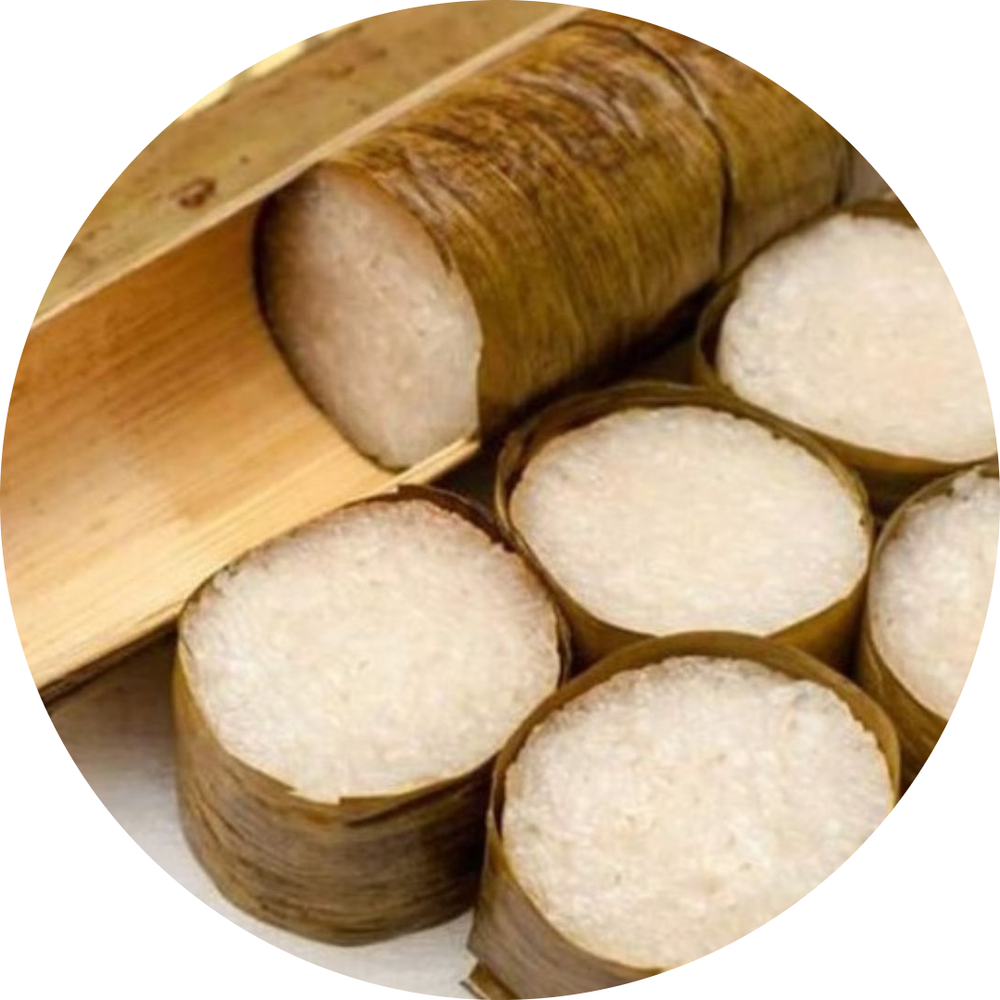

Kolo
Kolo adalah hidangan tradisional dari suku Minahasa di Sulawesi Utara, Indonesia. Hidangan ini terdiri dari nasi yang dicampur dengan daging babi, ikan, atau udang yang diolah dengan bumbu khas Minahasa, seperti serai, daun kemangi, dan cabai. Kolo biasanya disajikan dalam acara-acara khusus atau perayaan tradisional.

Bahan-Bahan
Beras secukupnya
Garam secukupnya
Bumbu penyedap rasa sesuai selera
Peralatan membuat Kolo:
Bambu diameter 7 cm dan panjang 30 cm
Daun pisang secukupnya
Cara Membuat
1. Potong bambu menjadi potongan-potongan;
2. Cuci beras sampai bersih;
3. Setelah itu tambahkan garam dan penyedap rasa secukupnya aduk rata;
4. Tuangkan air, aduk kembali;
5. Masukkan ke dalam bambu, lalu tutupi kedua ujung bambu dengan daun pisang;
6. Bakar bambu dengan api besar selama kurang lebih 30 menit atau sampai matang;
7. Setelah matang sajikan dengan lauk pauk sesuai selera.